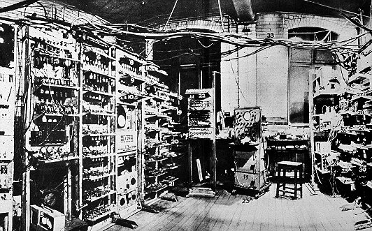

| OKULUN ADI | BAŞLADIĞI TARİH | BİTİRDİĞİ TARİH | ÇALIŞMALARI | |
| St. Michael's Okulu | 1918 | 1926 | ||
| Sherborne Okulu | 1926 | 1931 | ||
| King's College (Cambridge Üniversitesi) | 1931 | 1934 | merkezi limit teoremini | |
| Princeton Üniversitesi | 1936 | 1938 | Saptama Problemi Hakkında Bir Uygulamayla Birlikte Hesaplanabilir Sayılar |
Kriptanaliz

İkinci Dünya Savaşı’na da etkisi ve katkısı olan Alan Turing, Alman şifrelerini kırmak için çalışmış,
Polonya Şifre Bürosu ve İngiliz Hükümet Kod ve Şifre Okulu’nda görev almıştır. Almanlar tarafından gizli
mesajların şifrelenmesi ve tekrar çözülmesi amacı ile kullanılan bir şifre makinesi olan Enigma makinesinin
çözümünde çalışan Alan Turing, İkinci Dünya Savaşı’nda Almanya’nın çözülmesinde büyük etkisi vardır.
Matematikçi Gordon Welchman’ın önerilerini de dikkate alan Turing, Enigma’yı hızlı kırmaya yardımcı
olacak korumalı mesaj trafiğine saldırmada en önemli ve tek tam otomatikleştirilmiş kod kırma makinası
olan Bombe Enigma’yı geliştirdi.
Bilgisayar Biliminin Temelleri ve Turing Testi

1946’da ilk program hafızalı bilgisayarın detaylı tasarımının makalesini hazırlayan Turing, ACE yani Otomatik
Bilgisayar Motoru tasarımı için Ulusal Fizik Laboratuvarı’nda çalıştı ve 1950’de de ilk programını gerçekleştirdi.
Manchester Üniversitesi’nde bilgisayar laboratuvarında çalışan ve ilk gerçek bilgisayarlardan olan Manchester Mark
1 yazılımın hazırlayan Turing, bir yandan da yapay zeka ve makine zekası üzerine çalışmalara başladı. Çalışmalarının
sonucunda bugün Turing Testi olarak da adlandırılan, bir makinanın insan seviyesinde ve zeki olduğunu gösteren test
ortaya çıktı.